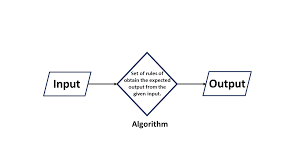
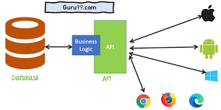
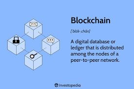
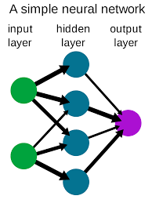

Featured Terms
-

Algorithm
A set of instructions for solving a specific problem or completing a specific task.
-
Cloud Computing
The delivery of computing services—including servers, storage, databases, networking, software, analytics, and intelligence—over the Internet (“the cloud”) to offer faster innovation, flexible resources, and economies of scale.
-

API
A set of protocols, routines, and tools for building software and applications. A good API makes it easier to develop a program by providing all the building blocks.
-
Machine Learning
A method of data analysis that automates analytical model building. It is a branch of artificial intelligence based on the idea that systems can learn from data, identify patterns and make decisions with minimal human intervention.
-

Blockchain
A digital ledger of transactions that is duplicated and distributed across the entire network of computer systems on the blockchain.
-

Neural Network
A set of algorithms, modeled loosely after the human brain, that is designed to recognize patterns. They interpret sensory data through a kind of machine perception, labeling or clustering raw input.